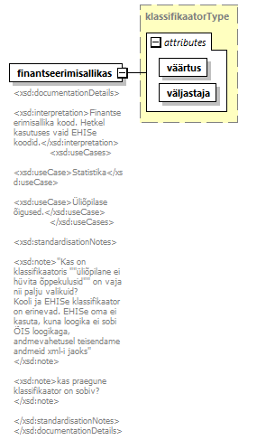

| diagram |  | ||||||||||||||||||
| namespace | http://www.ern.ee/õpe | ||||||||||||||||||
| type | klassifikaatorType | ||||||||||||||||||
| properties |
|
||||||||||||||||||
| used by |
|
||||||||||||||||||
| attributes |
|
||||||||||||||||||
| annotation |
|
||||||||||||||||||
| source | <xs:element name="finantseerimisallikas" type="klassifikaatorType"> <xs:annotation> <xs:documentation> <xsd:documentationDetails> <xsd:interpretation>Finantseerimisallika kood. Hetkel kasutuses vaid EHISe koodid.</xsd:interpretation> <xsd:useCases> <xsd:useCase>Statistika</xsd:useCase> <xsd:useCase>Üliõpilase õigused.</xsd:useCase> </xsd:useCases> <xsd:standardisationNotes> <xsd:note>"Kas on klassifikaatoris ""üliõpilane ei hüvita õppekulusid"" on vaja nii palju valikuid? Kooli ja EHISe klassifikaator on erinevad. EHISe oma ei kasuta, kuna loogika ei sobi ÕIS loogikaga, andmevahetusel teisendame andmeid xml-i jaoks" </xsd:note> <xsd:note>kas praegune klassifikaator on sobiv? </xsd:note> </xsd:standardisationNotes> </xsd:documentationDetails> </xs:documentation> </xs:annotation> </xs:element> |